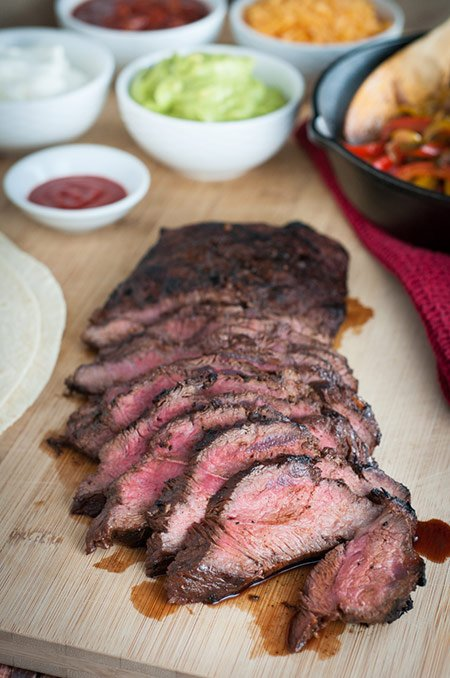

Fajita Style Skirt Steak

Fajita Style Skirt Steak
A nice steak is always going to be one of my favorites. A nice grilled steak? Even better. This recipe is only going to be the steak, but fajitas generally include some peppers and onions, along with some other toppings. Guacamole, tortillas, sour cream, and fresh cilantro are some common toppings. A quick pickled onion is easy and delicious as well. But, at the end of the day, the meat base is the star of the show, and I'm going to explain how to make it.
Ingredients
- 1 1/2 to 2 lb skirt steak
- 1/3 cup lime juice
- 1/4 cup pineapple juice(no sugar added)
- 2 tbsp worcestershire sauce
- 3 tbsp olive oil
- 1 tbsp minced garlic
- 2 tsp cumin
- 2 tsp chili powder
- 1 tsp salt
- 1 tsp smoked paprika
- 1/2 tsp black pepper
- 1/2 tsp red pepper flakes
- 1/4 cup chopped cilantro
Steps
- Combine all ingredients except the steak in a bowl
- Mix and taste, adjusting spice or salt level as desired. It should taste a little on the salty side, not all of it will penetrate the meat
- Cut the skirt steak in half if necessary to make easier to manage
- Cover the steak with the marinade in the container of your choice. I prefer a gallon size ziploc bag
- Let the steak marinate for atleast two to four hours, but preferably overnight
- To cook the steak, I prefer grilling.
- Warm up your grill, and then cook for three to five minutes on each side, or until the internal temperature reads 130-135 at the thickest part. This will produce a nice medium rare to medium steak
- Let rest for five to ten minutes, and then slice thinly against the grain